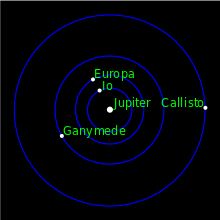

 Galileo's primary contribution to Astronomy is the telescope which was built in 1609. He didn't invent the telescope, but he was able to produce one himself that could be used to study the stars and planets. Besides this he was well known for proving and defending the theory of the heliocentric universe and disproving several of Aristotle's theories.
With the creation of his telescope, Galileo was able to discover the moons of Jupiter, the rings of Saturn, the phases of Venus. He also discovered that the sun isn't perfect as people once believed and that it had sunspots. The moon also was once thought to be perfect and smooth. This was another idea that Galileo was able to disprove.